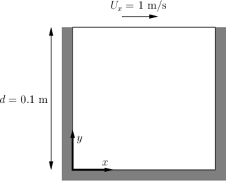

What is OpenFOAM ?
OpenFOAM is an open source Computation Fluid Dynamics (CFD) solve released and developed primarily by OpenCFD Ltd since 2004.
It has a large user base across most areas of engineering and science, from both commercial and academic organizations.
OpenFOAM has an extensive range of features to solve anything from complex fluid flows involving chemical reactions, turbulence and heat transfer, to acoustics, solid mechanics and electromagnetics.
There are two main branches of OpenFOAM,
one is from OpenFOAM Foundation (www.openfoam.org),
and the other is OpenCFD Ltd (www.openfoam.com).
In this guide, we only consider the later
Extensive guides, tutorials, code samples and documentation on the OpenFOAM can be found at www.openfoam.com.
General Information
There are usually three subfolders (0, constant and system) for all OpenFOAM cases
$ ls
0 constant system
The folder 0 includes the initial and boundary conditions for the flow quantities. In constant/polyMesh the computational mesh is stored. The files transportProperties and turbulenceProperties in constant are used to define the material properties of the fluid and the turbulence modelling approach, respectively. Additional data like STL files is also stored in constant. The system folder includes the various dictionaries (Dict) that control different aspects of the simulation. For example, we can modify the following files
system/blockMeshDict: to control the block-structrued mesher blockMesh.
system/snappyHexMeshDict: to set the parameters for snappyHexMesh, another mesher shipped with OpenFOAM.
system/decomposeParDict : to set the parameters of the domain decomposition used for running OpenFOAM in parallel.
numberOfSubdomains 16; // Set the number of used processes (16)?
method scotch; // Set the partition method (scotch) ?
system/controlDict: multiple simulation control parameters.
application simpleFoam; // Set the OpenFOAM solver (simpleFoam)
...
endTime 500; // Set the time steps (500 steps)
...
writeInterval 100; // Write results in files (per 100 steps)
...
system/fvSolution: iterative solver and pressure-velocity coupling parameters.
system/fvSchemes: selection of numerical schemes.
A typical workflow for an OpenFOAM case is schematically shown below
Start
|
v
blockMesh // Create a block mesh (set by system/blockMeshDict)
|
v
decomposePar // Divide into submeshes (set by system/decomposeParDict)
|
v
snappyHexMesh // create complex mesh (set by system/snappyHexMeshDict)
|
V
simpleFoam // run application(OpenFOAM solver) (set by system/controlDict)
|
V
reconstructPar // Stitch together the solutions from the submeshes
Of course, this can vary depending on what mesher you use, wether you run in parallel,
etc. There may also be additional pre- or post-processing steps.
Case: Lid-driven cavity flow
This case uses OpenFOAM to calculate the incompressible flow in a two-dimensional square domain, see the Figure blow

Here are some suggestions for this hands-on session.
Write questions on Hackmd.
Follow the instructions below to recap what we learned during th lecture. The material is written for the Tegner cluster, but you can start on your laptop for maximum interactivity.
Although post-processing with Paraview is listed as optional (see last section in the hands-on), it is very highly recommended that you install Paraview on your machine and inspect the results of the OpenFOAM simulations. Of course, you can use another post-processor of your liking.
At some point, do login to Tegner, and get comfortable with running on iteractive nodes. For that, follow the instructions in the slides by Arash.
Use the case as a sandbox to change various settings and play with the parameters. Use the “banana-trick” to learn about possible options: change any dictionary keyword to “banana”, the case will crash showing possible valid options for the keyword.
If you have CFD experience, ask yourself: what settings would I typically need to change? Then try to figure out what dictionaries and keywords correspond to that. The teachers are there to help! Try also to dig online a little bit yourself: one of the course outcomes is that you should be able to continue develop your skills on your own.
To use OpenFOAM on Tegner, we first need to load the appropriate module. This is followed by sourcing $FOAM_BASHRC to activate the OpenFOAM environment. The $FOAM_TUTORIALS will then store the path to the tutorial collection shipped with OpenFOAM. Note, you can also use the tut command to jump to the tutorial directory and look around. Important: Always copy the tutorial to a folder where you have full write permission, never execute tutorials inside $FOAM_TUTORIALS. Also, as OpenFOAM cases are not always backward-compatible, please make sure to always copy cases from $FOAM_TUTORIALS of the current version you are using.
$ module add openfoam/1912 # Using OpenFOAM v1912
$ echo $FOAM_BASHRC
/pdc/vol/openfoam/v1912/OpenFOAM-v1912/etc/bashrc
$ source $FOAM_BASHRC
$ cp -r $FOAM_TUTORIALS/incompressible/icoFoam/cavity/cavity .
The structure of the case is shown in the following
$ cd cavity
$ ls
0 constant system
$ tree
├── 0 (time directory starting with T=0, initial conditions)
│ ├── p (pressure)
│ └── U (flow velocity)
├── Allrun (precanned run file)
├── constant (hard static stuff i.e. physical properties)
│ ├── transportProperties (Transport Model e.g. Newtonian)
└── system
├── blockMeshDict
├── controlDict (the main dictionary for controlling the simulation)
├── fvSchemes
├── fvSolution
├── PDRblockMeshDict
The default setting is to run the application simpleFoam in serial on a two-dimensional square mesh of size (20×20×1). Note that all OpenFOAM cases are three-dimensional. For a two-dimensional case the third dimension has a single computational cell, and special boundary conditions are employed. The case will run up to time 0.5 with 0.005 per step, i.e. a total of 100 time steps. The simulation results are stored every 20 time steps.
Run the case by default
$ blockMesh # create the equivalent mesh of (20x20x1)
$ icoFoam > log.icoFoam
$ ls
0 0.1 0.2 0.3 0.4 0.5 constant system
Congratulations, you were able to run your first OpenFOAM case on a PDC cluster!
Inspecting the log file
To make sure everything is OK we can look at the output logs from the OpenFOAM run. This will show us if the run actually worked as intended. To do this, inspect log.icoFoam with your favorite editor or simply use commands like tail.
$ tail -n 50 log.icoFoam
Time = 0.5
Courant Number mean: 0.222158 max: 0.852134
smoothSolver: Solving for Ux, Initial residual = 2.3091e-07, Final residual = 2.3091e-07, No Iterations 0
smoothSolver: Solving for Uy, Initial residual = 5.0684e-07, Final residual = 5.0684e-07, No Iterations 0
DICPCG: Solving for p, Initial residual = 8.63844e-07, Final residual = 8.63844e-07, No Iterations 0
time step continuity errors : sum local = 8.8828e-09, global = 4.94571e-19, cumulative = 1.10417e-17
DICPCG: Solving for p, Initial residual = 9.59103e-07, Final residual = 9.59103e-07, No Iterations 0
time step continuity errors : sum local = 9.66354e-09, global = 1.13175e-18, cumulative = 1.21735e-17
ExecutionTime = 0.31 s ClockTime = 1 s
End
There is quite a bit of information to be extracted from the logs, such as residuals of the iterative solvers and the Courant number. Depending on the simulation options, the logs may become more expressive, monitoring additional simulation aspects.
Creating the finer mesh
The cavity case is too tiny to make running in parallel a reasonable alternative. We will therefore make the mesh denser. An overview of OpenFOAM meshing will be given during day 2 of the workshop. For now, we just provide the instruction for refining without much explaination. In system/blockMeshDict, the default mesh size is set by the triple (20 20 1), in the following lines.
blocks
(
hex (0 1 2 3 4 5 6 7) (20 20 1) simpleGrading (1 1 1)
);
So, to refine we can change it to e.g. (100 100 1),
blocks
(
hex (0 1 2 3 4 5 6 7) (100 100 1) simpleGrading (1 1 1)
);
And then rerun the command blockMesh.
$ blockMesh
If you now run icoFoam you will notice that the solver is slow and that the Courant number is very high!
Time = 0.01
Courant Number mean: 0.514905 max: 4.28024
smoothSolver: Solving for Ux, Initial residual = 0.124381, Final residual = 9.84033e-06, No Iterations 374
smoothSolver: Solving for Uy, Initial residual = 0.546347, Final residual = 9.89857e-06, No Iterations 402
DICPCG: Solving for p, Initial residual = 0.937878, Final residual = 0.0449945, No Iterations 58
time step continuity errors : sum local = 0.00115914, global = -3.719e-19, cumulative = -1.47005e-18
DICPCG: Solving for p, Initial residual = 0.887143, Final residual = 9.90418e-07, No Iterations 171
time step continuity errors : sum local = 2.39948e-08, global = -4.25067e-19, cumulative = -1.89512e-18
ExecutionTime = 0.54 s ClockTime = 0 s
This makes sense: we decreased the cell size, so to keep the Courant number reasonable we also need to change the time step. This is done by changing the value of the deltaT keyword in the controlDict. We can set the time-step to 0.0005.
deltaT 0.0005;
Running in parallel
Let us now run the case in parallel. Inspecting system/decomposeParDict, we see that the case is set to be decomposed into 4 subdomains.
numberOfSubdomains 4;
We will leave this as is and now we can decompose the case and run in parallel.
$ decomposePar
This will create directories processor0 to processor3, containing the subdomains. To run the case, execute the following command.
$ mpirun -np 4 icoFoam -parallel > logfile.icoFoamParallel
Upon completion we can reconstruct the solution on the whole domain:
$ reconstructPar -latestTime
Here, the -latestTime flag tells the program to only reconstruct the last time-step.
To do yourself:
Now that we decreased the time step there is a lot of output saved, look at e.g. processor0. Change the writeInterval in the controlDict to reduce that.
Play around with mesh sizes and change decomposeParDict to run on a larger number of processors.
Go through https://www.pdc.kth.se/support/documents/run_jobs/job_scheduling.html#how-to-submit-jobs to learn how to submit jobs to the cluster queue. Try to submit your cavity case as a short queued job. A simple jobs script example is available in the slides by Arash.
Increasing the Reynolds number
We will now increase the Reynolds number to 100, at which point the solution takes a noticeably longer time to converge.
$ cp -r cavity cavityHighRe
and then edit transportProperties dictionary to reduce the kinematic viscosity to 0.001
nu 0.01;
to
nu 0.001;
Increase the endTime from 0.5 to 2 so that icoFoam run upto 2 seconds.
$ icoFoam
Turbulence modelling (optional)
The need to increase spatial and temporal resolution then becomes impractical as the flow moves into the turbulent regime, where problems of solution stability may also occur. Instead Reynolds-averaged simulation (RAS) turbulence models are used to solve for the mean flow behaviour and calculate the statistics of the fluctuations. The standard k-epsilon model with wall functions will be used in this tutorial to solve the lid-driven cavity case with a Reynolds number of 10^4. Two extra variables are solved for: k, the turbulent kinetic energy, and epsilon, the turbulent dissipation rate. The additional equations and models for turbulent flow are implemented into a OpenFOAM solver called pisoFoam. To setup the model you will need three additional files in the 0 directory: nut, k, epsilon. Create them by making a copy of the p file, and then modify them as needed.
A range of wall function models is available in OpenFOAM that are applied as boundary conditions on individual patches. This enables different wall function models to be applied to different wall regions. The choice of wall function models are specified through the turbulent viscosity field, nut, in the 0/nut file:
dimensions [0 2 -1 0 0 0 0];
internalField uniform 0;
boundaryField
{
movingWall
{
type nutkWallFunction;
value uniform 0;
}
fixedWalls
{
type nutkWallFunction;
value uniform 0;
}
frontAndBack
{
type empty;
}
}
You should should now open the field files for k and epsilon ( in 0/k and 0/epsilon) and set their boundary conditions. For a wall boundary condition wall, epsilon is assigned an epsilonWallFunction boundary condition and a kqRwallFunction boundary condition is assigned to k. The latter is a generic boundary condition that can be applied to any field that are of a turbulent kinetic energy type, e.g. k, q or Reynolds Stress R
Turbulence modelling includes a range of methods, e.g. RAS or large-eddy simulation (LES), that are provided in OpenFOAM. In most transient solvers, the choice of turbulence modelling method is selectable at run-time through the simulationType keyword in turbulenceProperties dictionary. The user can view this file in the constant directory:
simulationType RAS;
RAS
{
RASModel kEpsilon;
turbulence on;
printCoeffs on;
}
The options for simulationType are laminar, RAS and LES. More informaton on turbulence models can be found in the Extended Code Guide With RAS selected in this case, the choice of RAS modelling is specified in a turbulenceProperties subdictionary, also in the constant directory. The turbulence model is selected by the RASModel entry from a long list of available models that are listed in User Guide Table. The k-Epsilon model should be selected which is is the standard k-epsilon the user should also ensure that turbulence calculation is switched on.
Finally, you can run the case with commands:
$ blockMesh
$ pisoFoam
Post-processing (optional)
The post-processing tool supplied with OpenFOAM is paraFoam, which is a wrapper of paraview (www.paraview.org). The paraFoam post-processing is started by typing in the terminal from within the case directory with loading paraview module.
$ module add paraview/5.8.1-gcc-7.2
$ paraFoam
Alternatively, if you can add an empty file inside the case directory.
$ touch case.foam
You can now open this file with regular Paraview, and not paraFoam.